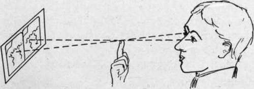
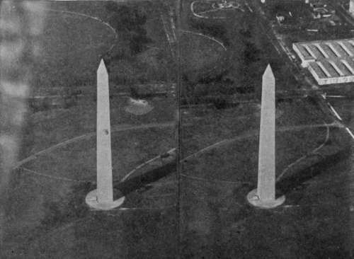

Stereo Obliques
Description
This section is from the book "Airplane Photography", by Herbert E. Ives. Also available from Amazon: Airplane photography.
Stereo Obliques
The theory of making oblique stereo pictures is identical with that of other stereos. The only problem peculiar to obliques is that of making the exposures at short enough intervals apart. This problem is due largely to the fact that oblique views are ordinarily taken from low altitudes, for the purpose of "spotting" particular objects, rather than for mapping the gross features of an extended area. The same problem of how to secure a short exposure interval is met with when we attempt to take vertical stereos from a low altitude, but as already discussed, it is much preferable from the pictorial standpoint that pictures of definite small objectives be made obliquely.
Another reason for taking stereo obliques from points but ordinary stereoscopic pairs in the transposed position for observation. This method consists in crossing the optic axes, in the fashion illustrated in Fig. 158. A finger is held in front of the face in such a position that the left stereogram element and the finger are seen in line by the right eye; the right element and the finger by the left eye. The proper position is found by alternately closing each eye, and advancing or retracting the finger. Then both eyes are opened and converged on the finger tip, which is thereupon dropped, leaving the picture standing out in relief. An opportunity to try this method is afforded by Fig. 159. little separated is of some interest in connection with the discussion above given of "correct" and "natural" relief. "When the relief is "correct" the object appears, as already stated, to be a small model in its true proportions, standing at the convergence distance. When the eyes are converged to a small object 25 to 50 centimeters away all objects beyond are hopelessly transposed and confused. This does not happen when we look at large distant objects, since their background is at a distance effectively but little beyond them. As a result, when a stereo oblique is made in "correct" relief of such an object as the Washington monument with buildings beyond, the confusion of the background presents an appearance entirely contrary to our visual experience with objects as large as the neighboring buildings are known to be. This effect may be avoided by choosing a uniform background such as grass, or by taking the pictures very much closer together, at the expense of "correct" but at a gain in "natural" relief.
Fig. 158. - Method of fusing transposed stereoscopic images by crossing the optic axes.
Stereo obliques can of course only be made with any facility by laterally pointing cameras. From the calculations already given it appears that a "correct" stereo oblique of an object 500 meters away will mean exposures only two or three seconds apart, too short an interval for any of the ordinary plate-changing and shutter-setting mechanisms; and the case is even worse should less relief be desired. One solution of this problem has been the use, already mentioned, of two cameras mounted together, either side by side or one over the other, with separate shutter releases. Both releases may be controlled by the observer, using a sight, or else pilot and observer may work in harmony as has been recommended in the English service, where the pilot releases one shutter and the observer counts time from the instant he sees the first shutter unwind and releases the second.
A very satisfactory apparatus for the taking of stereo obliques consists of a 10-inch focus hand-held camera (Fig. 157), provided with a two-aperture focal-plane shutter. The right-hand half of one curtain aperture is blocked out, the left-hand half of the other. The first pressure on the exposing lever exposes one-half of the plate, the second the other. A stereoscopic sight of the type already described is placed on the bottom. To make an oblique stereo negative the camera is held rigidly by resting the elbows on the top of the fuselage and the first exposure is made when the object comes in line with the rear sight and the leading front sight. The eye is then moved so as to look along the line of the rear sight and the following front sight, and when the object is again in alinement the second pressure is given the exposing lever.
Fig. 159 shows a stereo oblique made by this camera. The elements are transposed right and left, and the stereogram may be viewed by crossing the optic axes as shown in Fig. 158, or the two pictures may be cut apart and remounted.
Fig. 159. - Oblique stereogram made with stereoscopic aerial camera (Fig. 157). To be viewed by crossing the optic axes (Fig. 158).
Continue to:
Tags
camera, lens, airplane, aerial, film, exposure, photography, maps, birdseye